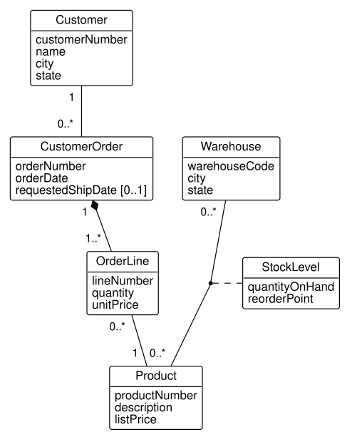

Appendix E — Tools for Drawing UML and ER Diagrams
Students of this course ask, every term, what software to use for their diagrams. The answer depends on the job. Drawing a class model of a business before any table exists is a design job, and needs a tool that draws what you tell it to. Drawing a picture of a database that already exists is a documentation job, and a database tool can do it from the database itself. This appendix describes both kinds of tool, starting with the approach every diagram in this book was drawn with: diagrams written as text.
The tools change quickly, and their prices and licenses change with them. The descriptions here were checked against each tool’s own documentation in September 2026; check again before you depend on one.
E.1 Two jobs, two kinds of tool
A design diagram states what a business records, in UML (Chapter 5) or in crow’s foot notation (Appendix D), before any table exists. It shows classes, associations with their multiplicities, association classes, qualifiers, and generalization, and it shows no foreign keys, since keys are decided later, in the mapping of Chapter 6. Any tool that lets you place and connect these elements will do.
A generated diagram is drawn by a database tool from a database’s catalog (Section 2.5): each table as a box with its columns, and a line for each foreign key. It is exact, since it is read from the database, and it stays current with one click. It is also a picture of the implementation, not of the business. Recall stage D4’s stock levels: the class model of Figure 5.7 draws them as an association class of warehouses and products, while a generated diagram draws a table, stock_level, with two foreign keys, and nothing on it says that a warehouse and a product may have at most one stock level between them, except a UNIQUE constraint the diagram may not show.
Thus, you need both. A design tool for the models you hand in and discuss, and your database tool for checking what you built. The next section describes the design approach this book uses.
E.2 Diagrams as text: PlantUML and Graphviz
Every diagram in this book is written as text. A diagram is a small file that names the classes, their attributes, and the associations between them, and a program lays it out and draws it. Writing a diagram as text has four advantages that matter for engineering work. The file sits beside the SQL and code it describes, in the same project, under the same version control, so a change to the model is recorded with the change to the tables. A diagram can be generated by a program, as this book’s product structure trees and schema diagram are generated from its database. One shared style file makes every diagram look alike. And nothing needs dragging into place: the layout program places the boxes.
PlantUML (plantuml.com) is the tool for UML and crow’s foot diagrams. It is free, written in Java, and draws class, object, sequence, and many other UML diagrams, and entity diagrams in crow’s foot notation. The class model of stage D4, Figure E.1, is drawn from this file:
@startuml
!include _style.iuml
' Stage D4: a second association class.
class Customer {
customerNumber
name
city
state
}
class CustomerOrder {
orderNumber
orderDate
requestedShipDate [0..1]
}
class OrderLine {
lineNumber
quantity
unitPrice
}
class Product {
productNumber
description
listPrice
}
class Warehouse {
warehouseCode
city
state
}
class StockLevel {
quantityOnHand
reorderPoint
}
Customer "1 " -- "0..* " CustomerOrder
CustomerOrder "1 " *-- "1..* " OrderLine
OrderLine "0..* " -- "1 " Product
Warehouse "0..* " -- "0..* " Product
(Warehouse, Product) .. StockLevel
@enduml
Read the file against Figure E.1. Each class block is a class with its attributes. "1 " -- "0..* " is an association with its multiplicities, written at the ends they belong to (Section 5.4); the spaces inside the quotes are optional padding that moves a label clear of its line. *-- is a composition, its filled diamond at the first class. The last two lines draw the association class: an association between Warehouse and Product, and StockLevel attached to it with a dashed line. A qualifier is written in square brackets, CustomerOrder [lineNumber] "\n1 " *-- "0..1" OrderLine, with the composition’s 1 at the whole end; the \n and the trailing spaces push that 1 below and beside the qualifier’s box, where it does not cover the diamond. A generalization is written Part <|-- ManufacturedPart. These are the constructs that simpler tools cannot draw, and the reason this book chose PlantUML.
The same tool draws crow’s foot diagrams. The stock levels of Figure D.2 come from this file, whose ||--o{ is a line with two bars at one end and a circle with a crow’s foot at the other (Table D.1):
@startuml
!include _style.iuml
hide stereotype
' Stage D4's stock levels in crow's foot notation: the association class
' StockLevel as an associative entity (translation appendix).
entity WAREHOUSE {
* warehouse_code
--
city
state
}
entity STOCK_LEVEL {
* warehouse_code (FK)
* product_number (FK)
--
quantity_on_hand
reorder_point
}
entity PRODUCT {
* product_number
--
description
list_price
}
WAREHOUSE ||--o{ STOCK_LEVEL
STOCK_LEVEL }o--|| PRODUCT
@endumlThe first line of each file after @startuml includes the book’s style file, which is why every figure in the book looks alike:
' Shared style for every diagram in the book. Included by each .puml with
' !include _style.iuml
' Changing this file marks every diagram stale; rerun scripts/build-diagrams.sh.
!theme plain
hide circle
hide empty methods
skinparam classAttributeIconSize 0
skinparam shadowing false
skinparam defaultFontName Helvetica
' Diagram text at about the size of the book's body text.
scale 1.2PlantUML lays out a class diagram with Graphviz (graphviz.org), a separate, free program for drawing graphs, which you install beside it. Without Graphviz, PlantUML falls back to a layout engine of its own, whose layouts differ and, in this book’s experience, mishandle qualifiers; the book’s build therefore requires Graphviz. Graphviz is also useful on its own, for diagrams that are not UML: the product structure trees of Section 4.6, the loop of a recursive query in Figure 4.8, and the dependency diagrams of Chapter 7 are Graphviz graphs. Its language, DOT, names nodes and the edges between them:
@startdot
digraph loop {
// How a recursive query runs: the anchor once, then the recursive part
// again and again on the rows of the previous step, until a step finds no
// rows. Drawn by hand. Graphviz diagrams set their own fonts, matching the
// Helvetica of _style.iuml, which applies to UML diagrams only.
graph [rankdir=TB, nodesep=0.4, ranksep=0.35, fontname="Helvetica"];
node [shape=box, style="rounded,filled", fillcolor="#f2f2f2",
fontname="Helvetica", fontsize=11, penwidth=1];
edge [fontname="Helvetica", fontsize=10, arrowsize=0.7];
anchor [label="Anchor\nrun once: find the starting rows\n(the HT-100)"];
add [label="Add the new rows to the result,\nand make them the working table", fillcolor="#dde8f3"];
step [label="Recursive part\njoin the working table to bom_line\nto find the next rows", fillcolor="#e3f0dc"];
bom [label="bom_line", shape=cylinder, style="filled", fillcolor="white"];
any [label="Any new\nrows?", shape=diamond, style="filled", fillcolor="white"];
stop [label="Stop: the result holds\nthe rows of every step", fillcolor="#f6e6d4"];
anchor -> add;
add -> step;
bom -> step [style=dashed, arrowhead=none];
step -> any;
any -> add [label=" yes"];
any -> stop [label=" no"];
{ rank=same; step; bom }
}
@enddotThree ways of running PlantUML suit a student. The PlantUML plugins for IntelliJ IDEA and for VS Code draw a preview beside the file as you type, which is the easiest way to learn the notation. The command line renders files to images, as this book’s build does (java -jar plantuml.jar -tsvg file.puml). And Quarto documents, like this book, can include the rendered images in a report. PlantUML’s web site also offers an online server that renders a diagram pasted into a browser. It is convenient for a homework problem, but the text you paste leaves your computer, so you should not paste an employer’s schema or data model into it.
Mermaid (mermaid.js.org) is a lighter text notation with class diagrams and entity-relationship diagrams, and it needs no Java: GitHub renders it in Markdown files, and Quarto renders it in documents. The stock levels as a Mermaid entity-relationship diagram are:
erDiagram
WAREHOUSE ||--o{ STOCK_LEVEL : holds
PRODUCT ||--o{ STOCK_LEVEL : "is stocked as"
STOCK_LEVEL {
int quantity_on_hand
int reorder_point
}Mermaid suits a quick diagram in a README or a report. Its class diagrams, however, have no association classes and no qualifiers, so the models of Chapter 5 cannot all be drawn in it; that is why this book uses PlantUML.
E.3 Diagrams from a database: DataGrip, DBeaver, and pgAdmin
The database tools of Appendix A each draw a diagram of a database that exists, from its catalog.
- DataGrip. Select a schema or some tables in the Database Explorer, right-click, and choose Diagrams, Show Diagram. Each table is a box with its columns, keys marked, and an arrow for each foreign key. The diagram can be saved as an image, and exported as PlantUML, a text file you can then edit and keep beside your model.
- DBeaver. Open a schema or a table and choose its ER Diagram tab. Right- clicking the diagram’s background offers a choice of Notation, crow’s foot among them (IDEF1X is the default). The diagram can be saved as an image, PNG among the free edition’s formats, or as GraphML for other diagram tools.
- pgAdmin. Right-click a database and choose ERD For Database. pgAdmin’s ERD tool draws the tables, and it also works the other way: you can draw new tables in it and choose Generate SQL, which writes the
CREATE TABLEstatements for the design and opens them in the query tool.
Each of these shows what Figure 2.2, the book’s generated diagram of the distribution schema, shows: tables, columns, types, keys, and references. None shows an association class as such, a composition’s diamond, or a generalization, since the catalog holds only tables and constraints. Use a generated diagram to check that the database you built matches your design, and to learn an unfamiliar database quickly, as the public databases of Section C.11 invite.
E.4 Drawing tools with a canvas
Many students prefer to draw on a canvas, placing shapes with the mouse. Table E.1 lists the tools they most often use.
| Tool | Cost to a student | UML class diagrams | Crow’s foot | Notes |
|---|---|---|---|---|
| diagrams.net (draw.io) | free | yes, as shapes | yes | runs in a browser or on the desktop; files are XML you can keep in a project |
| Lucidchart | free education accounts with a school e-mail; free plan limited to a few documents | yes | yes | runs in a browser; shared editing |
| Visual Paradigm Community Edition | free for non-commercial use, including education | full UML, with association classes and qualifiers | yes | desktop; exported images carry a small watermark |
| StarUML | a one-time license; an evaluation version | full UML | yes | desktop |
| dbdiagram.io | free plan limited to a number of diagrams | no | yes | draws an ER diagram from a text description of tables |
A canvas tool draws what you place, so it can draw anything, including a diagram that UML does not allow. Check what you draw against Chapter 5: an association class is attached to its association by a dashed line, a qualifier is a small box on the class at the qualified end, and a multiplicity is written at the far end from the objects it counts.
E.5 Choosing a tool
For a homework design or a project model, any of the tools above will do; pick one that draws association classes and qualifiers, which rules out Mermaid and some web tools. For a model you will revise over weeks, or keep with the code and SQL of a project, write it as text in PlantUML, since a text file records its own history and never needs redrawing. For seeing what a database holds, use your database tool’s diagram, and never draw by hand what the database can draw for you. Whatever you use, a diagram you hand in is a class model in the notation of Chapter 5, or a crow’s foot diagram translated as Appendix D describes.
E.6 Exercises
Exercise E.1 Write the class model of the kanban loop of Exercise 5.20 in PlantUML, include the style file shown in Section E.2, and render it with the IntelliJ IDEA or VS Code plugin or the command line. Compare your figure with Figure 6.15.
Exercise E.2 Load the book’s database through stage D4 (Section C.2) and draw the diagram of the distribution schema with DataGrip, DBeaver, or pgAdmin.
- List three things the class model of Figure 5.7 states that the generated diagram does not.
- List three things the generated diagram shows that the class model does not.
Exercise E.3 A classmate drew the tool crib of Exercise 5.18 in Mermaid:
erDiagram
TOOL ||--o{ CHECKOUT : "is checked out in"
MECHANIC ||--o{ CHECKOUT : makes
TOOL {
string tool_number
string description
date purchased_on
}
MECHANIC {
string employee_number
string name
}
CHECKOUT {
timestamp checked_out_at
timestamp returned_at
}- Rewrite it in PlantUML as a crow’s foot diagram, in the style of Figure D.6.
- Read each relationship both ways, in words.
- Could the same classmate draw the calibration model of Figure 6.14 in Mermaid? Explain.
Exercise E.4 Recommend a tool, and say why, for each of these:
- A one-time diagram for a homework problem on qualified associations.
- The data model of a semester project, revised every week by a team of three, and handed in with the project’s SQL.
- Learning the tables of an unfamiliar database a company has given you read access to.
- A diagram for the README of a project on GitHub.